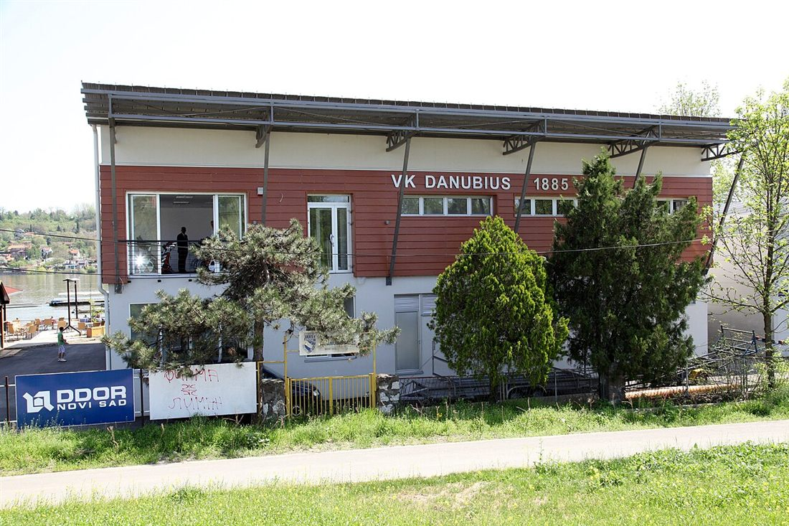

NAŠ KRAJ · DUNAV
Veslački klub "Danubius 1885": najstariji komšija na keju
Rano ujutro, dok je Štrand još prazan, na Dunavu se već vide uski čamci i ujednačeni zaveslaji. To su veslači "Danubiusa", kluba koji je na ovoj obali stariji od Štranda, od Limana i od većine zgrada koje danas zovemo našim krajem.
Klub je osnovan 28. marta 1885. godine, kada su usvojeni statut i pravila. Prvi predsednik bio je novosadski trgovac Viktor Menrat. Ideju o veslanju u Novi Sad doneo je, kako se navodi, pesnik Laza Kostić, a koreni kluba sežu do udruženja iz 1872. koje je okupljalo vatrogasce, veslače i jahače. Prva zabeležena probna vožnja bila je 10. maja 1885, čamcem "Stefania". Danubius važi za najstariji veslački klub u Srbiji i jedan od najstarijih sportskih klubova u regionu.
Klub je od početka bio ispred svog vremena. Prema klupskoj istoriji, prvi u Jugoslaviji je uveo veslanje za žene. Veslač Aladar Tišler je 1911. godine za jednu sezonu preveslao 2.098 kilometara. Pod predsednikom dr Ignjatom Pavlasom klub je 1924. postao državni prvak. Pavlas je stradao u novosadskoj raciji 1942. godine, na istoj obali Dunava kraj koje je klub decenijama veslao. U ratu su veslači preko reke u Srem prenosili poštu za partizane.

Zlatno doba stiglo je sedamdesetih i osamdesetih godina, uz trenera Srbu Saratlića, tadašnjeg saveznog trenera Jugoslavije. Najveći uspeh postigli su Zoran Pančić i Milorad Stanulov, koji su u dvojcu bez kormilara osvojili srebro na Olimpijskim igrama u Moskvi 1980. i bronzu u Los Anđelesu 1984. Klub je imao i medalje sa svetskih prvenstava, od Borisa Markovića 1983. do Čedomira Nikitovića, svetskog juniorskog prvaka 2005. godine.
Više od pola veka Danubius je na adresi Sunčani kej 4, pored Štranda. Stara zgrada je 2013. srušena, a nova je podignuta uz pomoć Vlade Vojvodine i ima hangar za pedeset čamaca. Grad je 2023. najavio da bi se klub, zbog proširenja Štranda, preselio na Kameničko ostrvo, ali to se za sada nije desilo.
Danas klub ima takmičarsku selekciju i školu veslanja za decu i rekreativce. Treneri vole da kažu da je veslanje "sport vode, vazduha i sunca". Za klince sa Limana teško da postoji lepše mesto za trening: reka, kej i grad koji se budi na drugoj obali.
Veslali ste za Danubius ili ste kao dete gledali regate sa keja? Pošaljite nam fotografiju ili priču.
Pošalji fotografiju ili sećanje